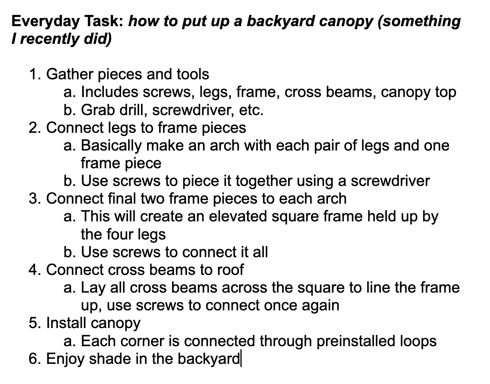

Lab 4 - Pseudocoding and Problem-solving
Challenge
Creating pseudocode for random tasks and simple games.
Problems
Making sure my pseudocode was meaningful and effective was a challenge. I didn't just want to be making some dumb list.
Reflection
This assignment helped me become more aware of how to make pseudocode effective and ready to be used when we begin actually coding.
Results
Here is my javascript commment code:
// Create values for rock, paper and scissors
// Create functions for rock, paper and scissors
// This means, rock>scissors, scissors>paper, paper>rock
// Same = same is a tie
// Make 2 player system
// Each player can select 1 of the 3 values
// They go head to head and the functions decide the result, (win, lose, tie)
// Ask both players to play again
// Repeat if yes
// Quit game if either player says no to playing again